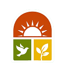

Leticia
Filipe
Maria Eduarda
Isis
Amanda
Gabriel

A Suspiro News nasceu com um propósito simples: mostrar que ainda existem muitas boas notícias no mundo. Em meio a tanta informação negativa no dia a dia, queremos ser um espaço de respiro, um verdadeiro suspiro de esperança para quem nos acompanha.
Somos um portal de notícias dedicado a compartilhar histórias positivas, avanços científicos, inovação sustentável, conquistas da humanidade, proteção aos animais e iniciativas que tornam o mundo um lugar melhor. Acreditamos que informar também pode inspirar, motivar e despertar a curiosidade das pessoas.
Nosso conteúdo é produzido com responsabilidade, buscando sempre transmitir informação com empatia, verdade e uma linguagem acessível para todos. A proposta da Suspiro News é trazer notícias que façam o leitor terminar a leitura com um sentimento melhor do que quando começou.
Mais do que um site de notícias, queremos construir uma comunidade de pessoas que acreditam no conhecimento, na ciência, na natureza e nas pequenas grandes mudanças que acontecem todos os dias.
Suspiro News: boas notícias que dão esperança e trazem um suspiro de alívio ao seu dia.
Ser um portal reconhecido por divulgar notícias que mostrem o lado positivo do mundo.
 1.png) Missão
Missão
Levar ao público notícias positivas que informem, inspirem e tragam esperança.
 4.png) Visão
Visão
Positividade, credibilidade, inspiração, inovação e compromisso com impactos positivos na sociedade.
 2.png) Valores
Valores
Criadores
Leticia
Filipe
Maria Eduarda
Isis
Amanda
Gabriel